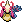
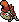

水槍Water Gun
- 屬性
- 水
- 分類
- 特殊
- 威力
- 40
- 命中
- 100%
- SP
- 10
- 冷卻
- 1 秒（特殊組）
- 範圍
- 直線
- 距離
- 3 格
- 段數
- 1
- 前搖
- 0.25 秒
- 接觸
- 否
招式分類跟隨招式的 屬性 （第三世代規則，與火紅／葉綠相同）：火、水、草、電、超能力、冰、龍、惡屬性招式一律是特殊招式；其他屬性是物理招式（例外：分擔痛楚）。因此暗影球是物理招式，攀瀑是特殊招式。這是刻意設計，不是錯誤。
即時戰鬥效果
造成一般傷害。
命中直線上的所有敵人。
升級時學會
 傑尼龜 Lv 13
傑尼龜 Lv 13 卡咪龜 Lv 13水箭龜 Lv 13
卡咪龜 Lv 13水箭龜 Lv 13 蚊香蝌蚪 Lv 13
蚊香蝌蚪 Lv 13 蚊香君 Lv 1蚊香君 Lv 13
蚊香君 Lv 1蚊香君 Lv 13 蚊香泳士 Lv 1
蚊香泳士 Lv 1 呆呆獸 Lv 13
呆呆獸 Lv 13 呆殼獸 Lv 13墨海馬 Lv 22
呆殼獸 Lv 13墨海馬 Lv 22 海刺龍 Lv 1海刺龍 Lv 22
海刺龍 Lv 1海刺龍 Lv 22 海星星 Lv 6
海星星 Lv 6 寶石海星 Lv 1
寶石海星 Lv 1 拉普拉斯 Lv 1
拉普拉斯 Lv 1 水伊布 Lv 16
水伊布 Lv 16 菊石獸 Lv 19
菊石獸 Lv 19 多刺菊石獸 Lv 1多刺菊石獸 Lv 19
多刺菊石獸 Lv 1多刺菊石獸 Lv 19 小鋸鱷 Lv 13
小鋸鱷 Lv 13 藍鱷 Lv 13
藍鱷 Lv 13 大力鱷 Lv 1大力鱷 Lv 13
大力鱷 Lv 1大力鱷 Lv 13 燈籠魚 Lv 17
燈籠魚 Lv 17 電燈怪 Lv 17
電燈怪 Lv 17 瑪力露 Lv 10
瑪力露 Lv 10 瑪力露麗 Lv 1瑪力露麗 Lv 10
瑪力露麗 Lv 1瑪力露麗 Lv 10 蚊香蛙皇 Lv 1
蚊香蛙皇 Lv 1 烏波 Lv 1
烏波 Lv 1 沼王 Lv 1
沼王 Lv 1 呆呆王 Lv 13
呆呆王 Lv 13 千針魚 Lv 13
千針魚 Lv 13 鐵炮魚 Lv 1
鐵炮魚 Lv 1 章魚桶 Lv 1
章魚桶 Lv 1 刺龍王 Lv 1刺龍王 Lv 22
刺龍王 Lv 1刺龍王 Lv 22 水躍魚 Lv 10
水躍魚 Lv 10 沼躍魚 Lv 1沼躍魚 Lv 10
沼躍魚 Lv 1沼躍魚 Lv 10 巨沼怪 Lv 1巨沼怪 Lv 10
巨沼怪 Lv 1巨沼怪 Lv 10 長翅鷗 Lv 1
長翅鷗 Lv 1 大嘴鷗 Lv 1大嘴鷗 Lv 3
大嘴鷗 Lv 1大嘴鷗 Lv 3 露力麗 Lv 21
露力麗 Lv 21 吼吼鯨 Lv 10
吼吼鯨 Lv 10 吼鯨王 Lv 1吼鯨王 Lv 10
吼鯨王 Lv 1吼鯨王 Lv 10 泥泥鰍 Lv 11
泥泥鰍 Lv 11 鯰魚王 Lv 11
鯰魚王 Lv 11 太古羽蟲 Lv 19
太古羽蟲 Lv 19 太古盔甲 Lv 1太古盔甲 Lv 19
太古盔甲 Lv 1太古盔甲 Lv 19
美納斯 Lv 1 飄浮泡泡 Lv 10
飄浮泡泡 Lv 10 海豹球 Lv 1
海豹球 Lv 1 海魔獅 Lv 1帝牙海獅 Lv 1
海魔獅 Lv 1帝牙海獅 Lv 1 珍珠貝 Lv 1
珍珠貝 Lv 1 古空棘魚 Lv 8
古空棘魚 Lv 8 愛心魚 Lv 12
愛心魚 Lv 12 大尾狸 Lv 15
大尾狸 Lv 15 泳圈鼬 Lv 6
泳圈鼬 Lv 6 浮潛鼬 Lv 6
浮潛鼬 Lv 6 螢光魚 Lv 6
螢光魚 Lv 6 霓虹魚 Lv 1霓虹魚 Lv 6
霓虹魚 Lv 1霓虹魚 Lv 6招式光碟
 水面屬性招式光碟 ・少見（每打倒一隻該屬性寶可夢 1%，由 11 個招式分配）
水面屬性招式光碟 ・少見（每打倒一隻該屬性寶可夢 1%，由 11 個招式分配）
可以教會 92 隻寶可夢：
傑尼龜卡咪龜水箭龜 可達鴨
可達鴨 哥達鴨蚊香蝌蚪蚊香君蚊香泳士
哥達鴨蚊香蝌蚪蚊香君蚊香泳士 瑪瑙水母
瑪瑙水母 毒刺水母呆呆獸呆殼獸
毒刺水母呆呆獸呆殼獸 小海獅
小海獅 白海獅
白海獅 大舌貝
大舌貝 刺甲貝
刺甲貝 大鉗蟹
大鉗蟹
巨鉗蟹墨海馬海刺龍 角金魚
角金魚 金魚王海星星寶石海星
金魚王海星星寶石海星 鯉魚王
鯉魚王 暴鯉龍拉普拉斯水伊布菊石獸多刺菊石獸
暴鯉龍拉普拉斯水伊布菊石獸多刺菊石獸 化石盔
化石盔 鐮刀盔小鋸鱷藍鱷大力鱷燈籠魚電燈怪瑪力露瑪力露麗蚊香蛙皇烏波沼王呆呆王千針魚
鐮刀盔小鋸鱷藍鱷大力鱷燈籠魚電燈怪瑪力露瑪力露麗蚊香蛙皇烏波沼王呆呆王千針魚 太陽珊瑚鐵炮魚章魚桶
太陽珊瑚鐵炮魚章魚桶 巨翅飛魚刺龍王
巨翅飛魚刺龍王 水君水躍魚沼躍魚巨沼怪
水君水躍魚沼躍魚巨沼怪 蓮葉童子
蓮葉童子 蓮帽小童
蓮帽小童 樂天河童長翅鷗大嘴鷗
樂天河童長翅鷗大嘴鷗 溜溜糖球露力麗
溜溜糖球露力麗 利牙魚巨牙鯊吼吼鯨吼鯨王泥泥鰍鯰魚王
利牙魚巨牙鯊吼吼鯨吼鯨王泥泥鰍鯰魚王 龍蝦小兵
龍蝦小兵 鐵螯龍蝦太古羽蟲太古盔甲醜醜魚美納斯飄浮泡泡海豹球海魔獅帝牙海獅珍珠貝
鐵螯龍蝦太古羽蟲太古盔甲醜醜魚美納斯飄浮泡泡海豹球海魔獅帝牙海獅珍珠貝 獵斑魚
獵斑魚 櫻花魚古空棘魚愛心魚
櫻花魚古空棘魚愛心魚 波加曼
波加曼 波皇子
波皇子 帝王拿波大尾狸泳圈鼬浮潛鼬
帝王拿波大尾狸泳圈鼬浮潛鼬 無殼海兔
無殼海兔 海兔獸螢光魚霓虹魚
海兔獸螢光魚霓虹魚 小球飛魚
小球飛魚